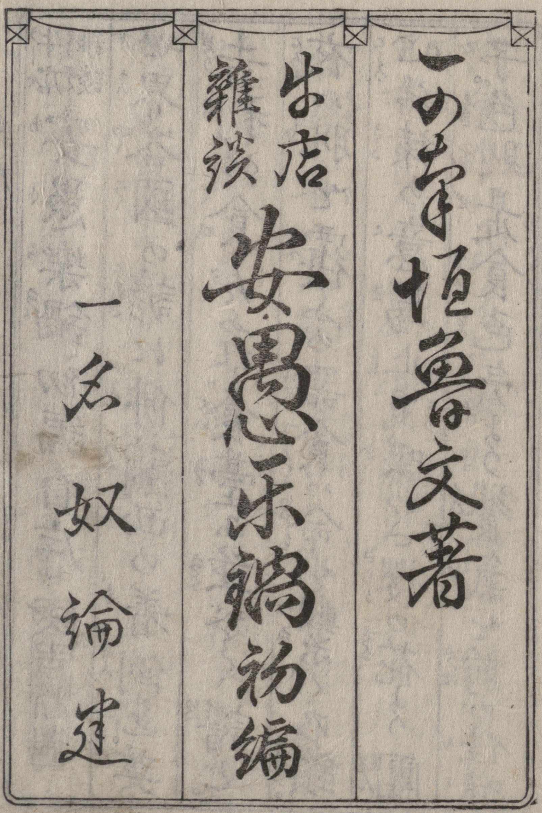
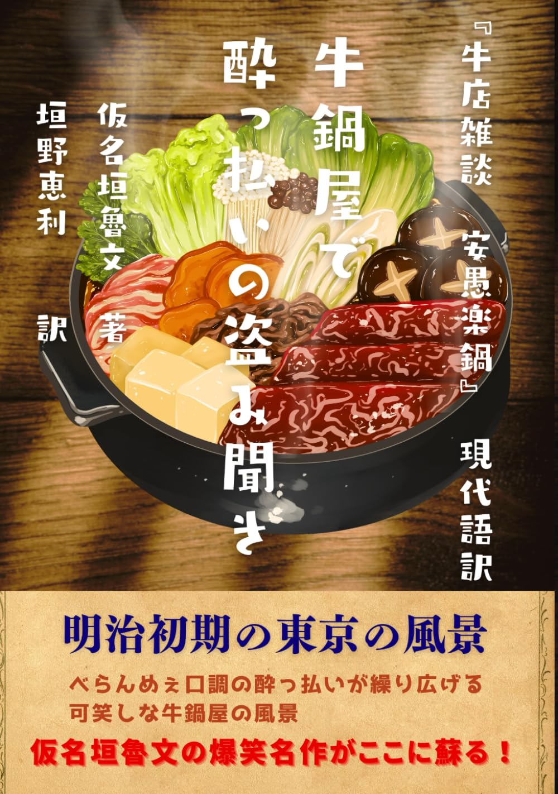

Learning to read くずし字 (kuzushiji)
I’m frustrated when I encounter bits of Japanese written in older orthography and cannot read them. Store signs, stone monuments, the text in ukiyo-e. In particular, I’m interested in Meiji history (late 19th century), and I want to be able to read those texts.
At first I thought I could use a flash card approach with anki, but I didn’t make much progress with that.
My next idea is to find a book that is relatively easier to read. Easier because the text is less elaborately brushed, because the characters are less overlapping, because there is a 翻刻 version available (someone who can read the older characters has transcribed them into modern standard hiragana), because there is a 現代訳 (translation into modern Japanese) and even, perhaps, an English version.

I’ve found a book that satisfies all but one of these desiderata (no English). 牛店雑談・安愚楽鍋 (Gyūten Zōdan: Aguranabe, “Beef-Shop Gossip: The Easygoing Hot-Pot”) is a satirical comic fiction (gesaku) by Kanagaki Robun, published in three volumes between 1871 and 1872 — making it one of the earliest works of the Meiji period. Set in a Tokyo beef-hot-pot restaurant, it strings together the overheard conversations of a rotating cast of customers: merchants, former samurai, Buddhist priests, and other social types all awkwardly negotiating the new Westernizing Japan over bowls of gyūnabe.
The genius of the work is its form: there is almost no plot, just dialogue — vivid, funny, and sharply observed. Robun uses each character’s speech to skewer the social absurdities of bunmei kaika (civilization and enlightenment), the Meiji slogan that urged Japan to wholesale adopt Western ways. Eating beef, long taboo under Buddhist prohibition, had become a symbol of modernity, and the beef-pot shop was the perfect democratic setting where all ranks had to rub shoulders.
Written in colloquial Edo-Meiji vernacular with heavy use of phonetic kana, the text is a rich document of the language in transition — and a genuinely entertaining read.

Here are some of the tools that will help me (and my tutor Tomoko Aizawa, of the Nihongo Picnic online Japanese school) read it.
| Function | Asset |
|---|---|
| scans of book | https://dglb01.ninjal.ac.jp/ninjaldl/bunken.php?title=aguranabe |
| 現代訳 | 牛鍋屋で酔っ払いの盗み聞き『牛店雑談 安愚楽鍋』現代語訳 |
| 現代訳 | 仮名垣魯文「安愚楽鍋」現代語訳 |
| 翻刻 | http://hanaha-hannari.jp/emag/data/kanagaki-robun01.html |
| くずし字解読講座（静岡県歴史文化情報センター） | https://www.tosyokan.pref.shizuoka.jp/contents/history/kuzushi.html |
| glossary for 牛屋雑談 | 牛店雑談安愚楽鍋用語索引(search used books at <kosho.or.jp>) |